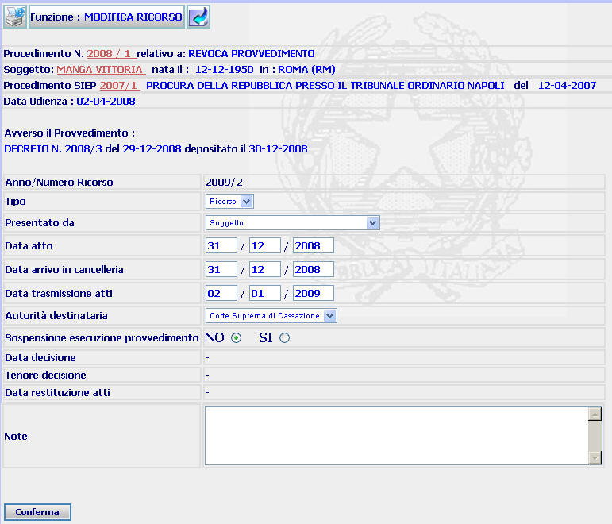

MODIFICA RICORSO: La funzione consente di modificare i dati del ricorso inseriti utilizzando la funzione iscrizione ricorso.
N.B. Nel caso di MODIFICA IMPUGNAZIONE/RICORSO fare riferimento al link.
LE MASCHERE VIDEO
La funzione viene realizzata attraverso la maschera seguente in cui compaiono gli estremi del procedimento Sius, il nome del soggetto, gli estremi del procedimento Siep, quelli del provvedimento impugnato, l'eventuale data di udienza ed i campi dove inserire le modifiche ritenute necessarie.

COME FARE PER ...
| Per visualizzare il dettaglio del procedimento Sius l'utente deve cliccare sul link relativo all'Anno/Numero del procedimento Sius evidenziato in rosso; |

| Per visualizzare il dettaglio del soggetto l'utente deve cliccare sul link relativo al cognome/nome del soggetto evidenziato in rosso; |

| Per visualizzare il dettaglio del procedimento Siep l'utente deve cliccare sul link relativo all'Anno/Numero del procedimento Siep evidenziato in rosso; |

| Per modificare i dati inseriti attraverso la maschera iscrizione ricorso l'utente deve: |
- compilare uno o più campi già selezionati in fase di iscrizione;
- selezionare, nel caso in cui il Tribunale di Sorveglianza abbia disposto la sospensione dell'esecutorietà del provvedimento impugnato, il radio button
N.B. Nel caso in cui il radio button venga selezionato come sopra descritto, nella maschera di dettaglio ricorso appare la seguente dicitura
- confermare i dati inseriti selezionando il bottone
CAMPI
I campi da compilare sono quelli già inseriti e descritti nella funzione iscrizione ricorso
PULSANTI
Sono presenti
i pulsanti
 e
e
 facenti
parte del gruppo di
pulsanti di "Uso Comune"
facenti
parte del gruppo di
pulsanti di "Uso Comune"
BOTTONI
Oltre ai comandi funzionali relativi al menù verticale è presente il seguente bottone:
|
COMANDI |
DESCRIZIONE |
|
|
A fronte di tale comando, il sistema dopo aver verificato la validità dei dati specificati, presenta la maschera di dettaglio ricorso. |
CONTROLLI
Il sistema effettua i medesimi controlli descritti nella funzione iscrizione ricorso